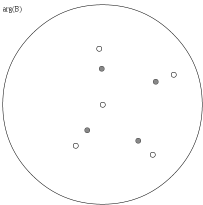
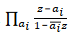
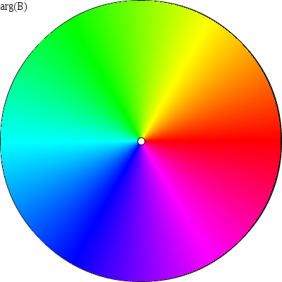
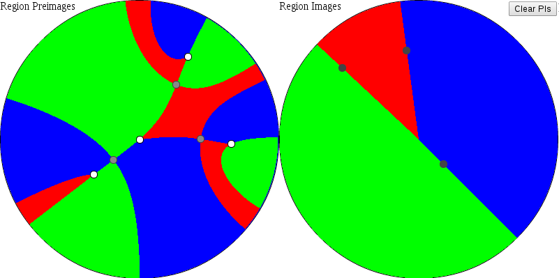
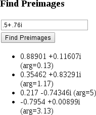
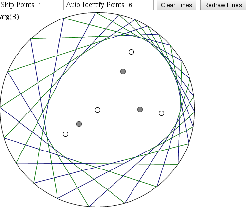

To get started with the applet, first specify the zeroes of the Blaschke product that you want to investigate. Each white circle is a zero of the Blaschke product, and the grey circles are drawn at the critical points. The white points (except for the zero at zero) can be dragged around the circle. Double-clicking on the circle will add a new zero at that point, and dragging a zero outside of the circle will remove it. The grey critical points will be automatically recomputed. Numerical values for the Zeroes, Critical Values, and Critical Points are displayed to the right of the circle.
One can also enter the zeroes of a Blaschke product in the "Load/Edit" box, and click to configure the Blaschke product to use those zeroes. Clicking "Permalink" will generate a web link with these zeroes which can be bookmarked for future reference.
Tip: if you want to see a Blaschke product without a zero at zero, you can remove it from the "Load/Edit" box and click .
N.B. Blaschke products can have a leading term of modulus 1. The applet uses a Blaschke product of the form . Another useful form is to write the numerator of each term as (ai-z) and keep the same denominator. Single-factor Blaschke products of that form have the benefit of being self-inverse.
The user can generate or regenerate a color plot the argument of the Blaschke product by clicking the button. This generates three plots: "arg(B)," "Region Preimages," and "Region Images." Each color on the "arg(B)" plot corresponds to an angle λ For example:
The Region Images plot divides the circle into regions bounded by curves which pass through the critical points of the plot. (Each curve is a preimage of f(t) = t * ei*arg(w) where w is a critical value of B.) In the illustration below, each region on the left of a given color maps one-to-one with to the region of the same color on the right. The grey circles in the "Region Images" plot are the critical values of the Blaschke product (which lie on the boundaries between the colored regions. Also observe that in this example there are four regions of each color on the left hand side (one adjacent to each zero), illustrating the fact that a Blaschke product of degree n is an n-to-1 map.
Clicking in the "Region Images" circle and dragging one's mouse around will draw, in the "Region Preimages" circle, the points which map to the points which you drag over. Clicking the button clears those paths.
The utility lets you enter an imaginary number in
x+yiformat, and it will find points which map to that value under the Blaschke product.
The applet can also draw lines which help to illustrate the properties of the Blaschke-Poncelet curves. Entering a value N in the "Auto Identify Points" box will pick N for λ and the applet will then plot lines connecting the points which B maps to eiλ. Entering a value M other than 1 in the "Skip Points" box will instead skip M points when drawing lines.
The "Auto Re-Draw" checkbox will automatically replot these lines as the zeroes of the Blaschke product are manipulated. The "Guess Ellipse" checkbox will attempt to fit an ellipse to that curve. The "Solid Lines" checkbox will draw the approximation to the Poncelet curve in red, and draw the ellipse (if specified) with bolder lines.
This code uses the Numeric.js numerics library for javascript, jQuery. The algorithm to best-fit an ellipse to a set of data points was adapted from a Python example Fitting an Ellipse to a Set of Data Points.